Odeng(fish cake).
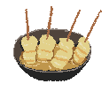1.
2.
Bungeoppang (fish-shaped bun).
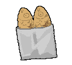3.
Chakani (snack brand).
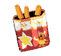4.
Odeng, and Bungeoppang.
5.
Bungeoppang, and Pikachu pork cutlet.
6.
Bungeoppang, hotteok, odeng, chicken skewers, and various street snack foods.
/hottuck.png) 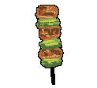
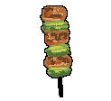
7.
I think I often ate tteokbokki at stationery shops. I also really liked Pikachu pork cutlets.
/bokki.png)
8.
Chocolate snacks with toys inside: Eggmong
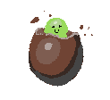9.
The lava-hot bungeoppang really stands out in my memory, but I also liked cold slushies in winter
—especially the blue one.
10.
Street-food stall banquet noodles (janchi guksu), tteokbokki, and sundae (blood sausage)
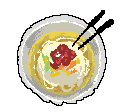
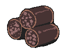
11.
Street-food stall fish cake, bungeoppang, and chrysanthemum bread (gukhwappang).
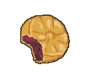12.
Tteokbokki.
13.
Bungeoppang.
14.
Grilled squid.
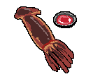15.
Fish cake, bungeoppang.
16.
Bungeoppang… fish cake…
17.
I ate tons of junk snacks from stationery shops, and I also ate tteokbokki at the snack bar in front of my school!!
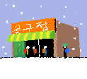
18.
Bungeoppang, and fish cake (with broth)


00:00